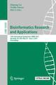

yupinglu89@gmail.com | YupingLu | @YupingLu | Dissertation
Advances in Big Data Analytics: Algorithmic Stability and Data Cleansing
A PhD Dissertation by: Yuping (Allan) Lu
PhD Committee Members
- Dr. Michael Langston, Advisor, Professor at UTK
- Dr. Jitendra Kumar, Mentor, Research Scientist at ORNL
- Dr. Qing “Charles” Cao, Professor at UTK
- Dr. Audris Mockus, Professor at UTK
- 2019
-
July 17
Final Signatures from the Committee
-
July 15
Dissertation Defense
-
June 21
Schedule of Dissertation submitted
-
June 11
Poster presented at 2019 ARM/ASR PI Meeting
Convolutional Neural Networks for Hydrometeor Classification Using Dual Polarization Doppler Radars
Yuping Lu, Jitendra Kumar
-
June 10
Dissertation draft submitted to Graduate School
- 2018
-
November 14
Applied for Graduation on MyUTK
-
September 14

Workshop Paper Accepted by ICDM2018
Detecting Outliers in Streaming Time Series Data from ARM Distributed Sensors
Yuping Lu, Jitendra Kumar, Nathan Collier, Bhargavi Krishna, Michael A. Langston
-
April 2
-
March 24
Paper Accepted by ISBRA2018
A Robustness Metric for Biological Data Clustering Algorithms
Yuping Lu, Charles A. Phillips, Michael A. Langston
- 2017
-
May 7
Biclique submitted to CRAN
A tool for enumerating maximal complete bipartite graphs.
- 2016
-
April 9
Poster presented at UT-KBRIN Bioinformatics Summit 2016
Enrichment vs Robustness: A Comparison of Transcriptomic Data Clustering Metrics
Yuping Lu, Charles A. Phillips, Michael A. Langston
- 2013
-
August 6
Started PhD program at UTK
Department of Electrical Engineering & Computer Science
Advisor: Dr. Michael Langston
Research Topic: Combinatorial Algorithms, Graph Metrics, Outlier Detection